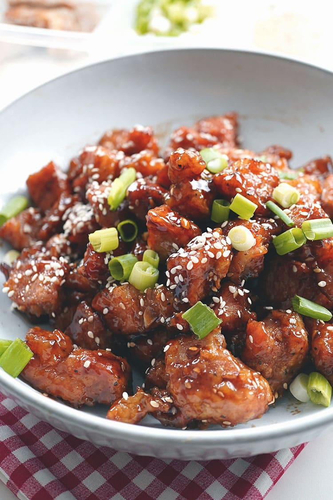

Chicken Teriyaki

Chicken teriyaki is a Japanese dish featuring grilled or pan-seared chicken coated in a glossy,
sweet, and savory teriyaki sauce made from soy sauce, mirin, sugar, and sake.
It is often served with rice and vegetables, making for a flavorful and well-balanced meal.
Ingredients
- 2 tablespoons cornstarch
- 2 tablespoons water
- 1 cup low-sodium soy sauce
- ½cup white sugar
- ¼ cup mirin (Japanese sweet wine)
- 3 cloves garlic, minced
- 3 cloves garlic, minced
- ¼ teaspoon red pepper flakes
- 4 skinless, boneless chicken breast halves
Steps
-
Preheat oven to 400 degrees F (200 degrees C).
-
Whisk cornstarch and water together in a small bowl until dissolved; set aside.
Combine soy sauce, sugar, mirin, ginger, garlic, and red pepper flakes together
in a saucepan over medium heat until the mixture starts to simmer.
Slowly whisk in cornstarch mixture. Bring to a boil; reduce heat to medium-low,
and simmer until thickened, stirring often, about 10 minutes.
-
Pat chicken dry with paper towels; arrange in a baking dish.
Pour sauce over chicken breasts, coating all sides.
-
Bake chicken breasts in the preheated oven until no longer pink in the center
and the juices run clear, 25 to 30 minutes. An instant-read thermometer inserted
into the center should read at least 165 degrees F (75 degrees C).
Home